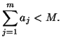
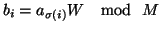
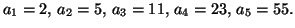
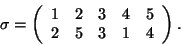
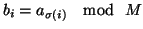
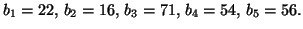
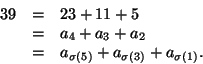

Le problème du sac à dos et le chiffre de Merkle-Hellman
Le problème du sac à dos
À votre droite, un sac à dos vide. À votre gauche, m objets, de poids respectifs a1,...,am. Quels objets doit-on mettre dans le sac à dos pour obtenir un poids total égal à k?
Il s'agit là d'un problème très difficile, à la fois en pratique (il est insoluble, même avec un ordinateur, pour de grandes valeurs de m), et en théorie (on peut prouver qu'il fait partie de la classe des problèmes les plus difficiles à résoudre avec un ordinateur, les problèmes NP-complets). Il est très difficile, sauf dans le cas particulier où la suite (an) est supercroissante, c'est-à-dire si pour tout entier i :
Cryptographie et problème du sac à dos
Il est intellectuellement séduisant de baser un algorithme de cryptographie à clé publique sur le problème du sac à dos. En effet, contrairement au problème de la factorisation d'entiers, ce problème est prouvé mathématiquement comme étant difficile, c'est à dite NP-complet (lire les explications). Mais il faut pouvoir pouvoir placer une trappe sur ce problème du sac à dos pour qu'il puisse être résolu par celui en possession de la clé privée.
La solution apportée par Merkle et Hellman est séduisante. Ils ont proposé d'utiliser un problème de sac à dos supercroissant comme clé privée, et de le camoufler sous un problème de sac à dos général pour en faire une clé publique. Plus en détails, voici ce que cela donne :
- on se donne un entier m, une suite supercroissante a1,...,am, et un autre entier entier M vérifiant :
 On dispose ainsi d'un sac à dos supercroissant. - on choisit au hasard un entier W, compris entre 1 et M-1, et premier avec M-1.
- on choisit au hasard une permutation de l'ensemble {1,...,m}.
- on calcule  pour tous les i. On vient ainsi de camoufler le problème du sac à dos supercroissant en sac à dos général.
Application numérique
- Fabrication des clés publiques et privées :
- on choisit m=5 et la suite supercroissante :
 - Soit M=113, W=27 (premier avec M), et la permutation :
 - Le calcul de  donne :

- on choisit m=5 et la suite supercroissante :
- Envoi du message : on veut envoyer le message 10101 (en binaire). On transmet donc : C=b1+b3+b5=149. Remarquons que, comme prévu, lorsque l'on connait 149 et les poids 22, 16, 71, 54 et 56, il n'est pas du tout évident de retrouver ceux qui ont servi à former 149.
- Réception du message : on calcule W-1 par l'algorithme d'Euclide, et on trouve W-1=67. Le calcul de W-1C donne 39 (tous les calculs s'effectuent modulo 113). On redécompose 39 dans la suite supercroissante :
 Le message initial était donc 10101.Consulter aussi